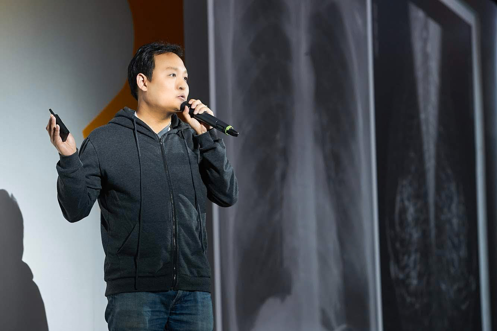

Hi! I am the co-founder and the Executive Chairman of Lunit, the world's leading AI-powered cancer biomarker company, where I continue to help Lunit realize its vision of conquering cancer through mentoring, coaching the leadership team, and driving key strategic initiatives.